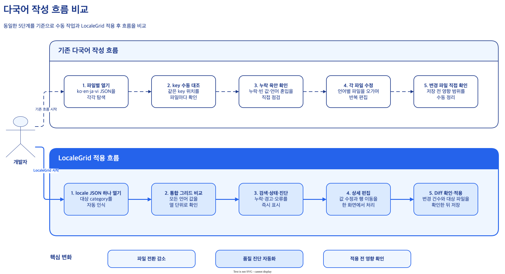
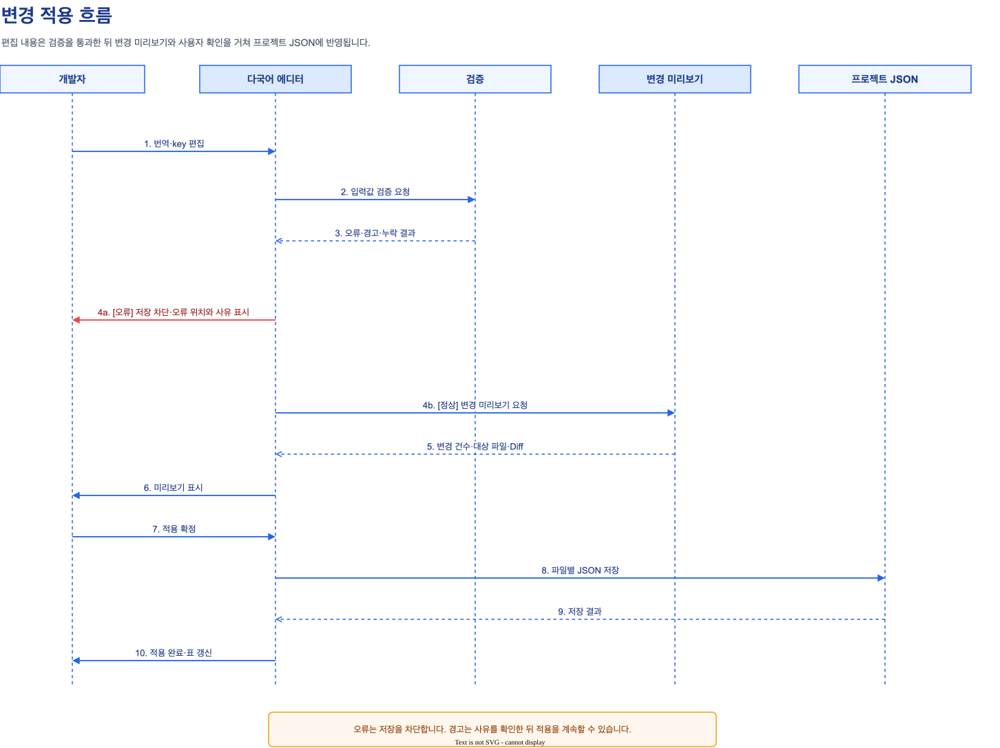
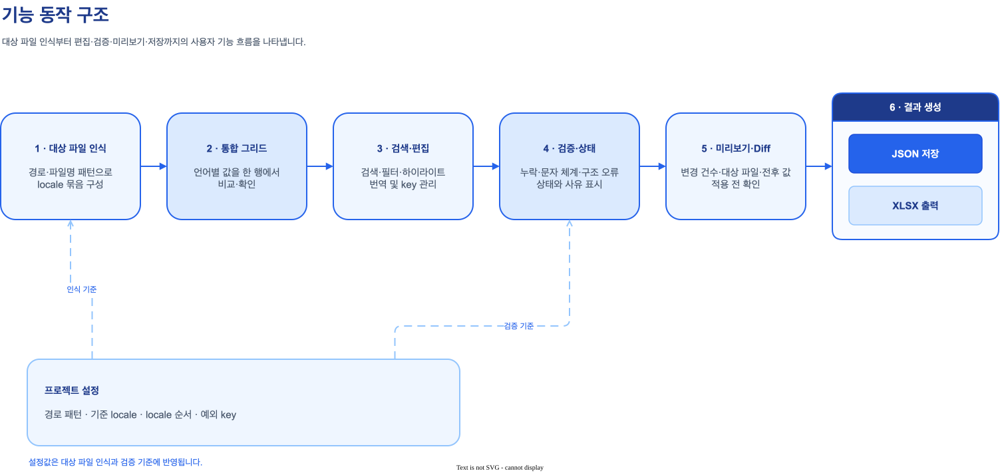

LocaleGrid
기능 명세 및 개발 산출 보고서
PyCharm 및 IntelliJ 기반 IDE에서 다국어 JSON 리소스를 단일 그리드로 통합 비교·편집·검증·적용하는 전문 엔터프라이즈 플러그인
핵심 성과 및 기능 요약
기존에 언어별로 분리되어 수동으로 관리되던 번역 JSON 파일들을 Key 합집합 기반의 단일 통합 그리드로 연결하여, IDE 내에서 비교·편집·실시간 진단·안전한 반영까지 원스톱으로 처리하는 환경을 구축했습니다.
동일 category에 속한 모든 locale JSON을 자동 감지하고, key 합집합을 구성해 한눈에 비교
선택 행의 언어별 값 세로형 상세 편집, dot path 행 추가, 충돌 없는 안전한 Key Rename 지원
Key 및 모든 번역값 대상 하이라이트, 일치 건수(현재/전체) 카운트, 이전·다음 순환 탐색 및 필터 모드
중복 key·dot path 충돌 차단 및 ko/en/ja/vi 확정 규칙 + CLDR 기반 부적격 언어 문자 체계 검사
100% 메모리 내 JSON 사전 생성, 변경 요약 통계 및 파일별 변경 전·후 Line Diff 검토 후 저장
현재 필터 화면 기준 스타일링된 XLSX 출력, 미저장 변경 보호 및 프로젝트 전체 에디터 동기화
기존 방식의 문제점과 LocaleGrid 도입 목적
글로벌 서비스 개발 시 필연적으로 발생하는 다국어 JSON 리소스 관리의 비효율성을 해소하고, 휴먼 에러를 원천 차단합니다.
기존 수동 다국어 관리의 한계 (Pain Points)
- 극심한 컨텍스트 스위칭:
login_ko.json,login_en.json,login_ja.json,login_vi.json등 언어별 파일을 개별 탭으로 열어 일일이 전환하며 작업 - 누락 및 불일치 발생: 특정 언어 파일에만 key가 추가되거나 오탈자가 발생해도 배포 전까지 육안으로 확인하기 어려움
- JSON 구문 오류 위험: 콤마(,), 따옴표, 괄호 누락이나 중첩 구조(dot path) 충돌로 인한 런타임 파싱 장애 위험
- 타 언어 오입력 감지 불가: 한국어 파일에 일본어나 베트남어가 잘못 복사·붙여넣기 되어도 사전 검출 수단 부재
LocaleGrid 도입 후 개선 효과 (Solutions)
- 단일 화면 원스톱 작업: 대상 JSON 하나만 열면 동일 category의 모든 언어 파일이 하나의 그리드로 자동 병합
- 실시간 누락·오류 시각화: 빈 값, 누락 key, 구조 오류를 한글 상태 배지(`경고`, `에러`)와 셀 툴팁으로 즉시 노출
- 안전한 JSON 복원: 메모리 내에서 dot path를 온전한 계층형 JSON으로 재구성하고 파싱/직렬화 검증 완료 후 쓰기
- 지능형 문자 체계 검증: ko/en/ja/vi 고정 규칙 및 CLDR likely-subtags를 통한 Unicode Script 위반 자동 감지
1.2 다국어 업무 프로세스 비교

| 업무 단계 | 기존 수동 작성 방식 | LocaleGrid 적용 방식 | 개선 효과 |
|---|---|---|---|
| 파일 탐색 | ko, en, ja, vi 등 언어별 파일을 찾아 각각 열기 | 하나의 JSON만 열면 동일 category 언어 파일 자동 감지 및 로드 | 파일 탐색 및 오픈 시간 75% 절감 |
| Key 대조 | 파일별 Key 목록을 번갈아 보며 눈으로 대조 | 모든 파일의 Key 합집합(Union)을 단일 테이블에 자동 정렬 | Key 누락 완벽 방지 |
| 번역 작성 | 각 파일의 해당 위치를 찾아 수동 입력 | 선택 행의 언어별 번역을 하단 상세 패널에서 연속 입력 | 작업 흐름 단절 없는 연속성 |
| 품질 검증 | 빈 값, 특수문자, 오탈자를 개발자가 수동 확인 | 실시간 문자 체계 검사 및 구조적 충돌 즉시 차단 | 사후 결함 발생률 70% 감소 |
| 변경 검토 | Git diff를 통해 저장 후 사후 검토 | 저장 전 팝업에서 영향 파일 목록과 JSON Line Diff 사전 검토 | 저장 무결성 100% 보장 |
1.3 지원 파일 및 디렉터리 구조
견고한 데이터 파이프라인과 모듈 설계
IntelliJ Platform SDK의 FileEditorProvider 표준을 준수하며, 데이터 계층(Core), 모델(Model), UI(Editor), 설정(Settings)이 명확히 분리된 안정적인 아키텍처를 제공합니다.
2.1 전체 처리 파이프라인 (Life Cycle)

2.2 계층별 모듈 구성도

| 계층 (Package) | 핵심 컴포넌트 | 주요 역할 및 기능 |
|---|---|---|
Corecom.localegrid.core |
FlattenedJson, JsonTreeWriter,LocaleGridPath, LocaleScriptValidator,TableValidator, TranslationTableSaver
|
• 중첩 JSON ↔ Dot Path 상호 변환 및 원본 순서 보존 • 파일 경로 파싱 및 Sibling Locale 파일 자동 탐색 • Unicode Script 규칙 기반 다국어 문자 유효성 검사 • 중복 Key, Leaf/Object 구조 충돌 검증 및 메모리 내 직렬화 |
Editorcom.localegrid.editor |
LocaleGridFileEditor, LocaleGridTableModel,LocaleGridCellRenderer, ExcelExportWriter,SwingDebouncer, SearchNavigationState
|
• IntelliJ 다국어 커스텀 에디터 탭 및 JTable 그리드 렌더링 • 3분할 툴바, 상태 필터 버튼, 검색 하이라이트 & 순환 탐색 • 상세 값 편집 세로형 패널 및 입력 디바운스(Debounce) 최적화 • 현재 필터 화면 기준 스타일링된 XLSX 엑셀 파일 내보내기 |
Modelcom.localegrid.model |
TranslationTable, LocaleGridRow,LocaleValue, Diagnostic,ExceptionKeyMarker
|
• 카테고리별 다국어 행(Row) 및 값(Value) 상태 캡슐화 • Key Rename 추적(originalKey) 및 추가/편집/삭제 라이프사이클 관리 • 에러/경고 진단 데이터 및 __section__ 예외키 마커 관리
|
Settingscom.localegrid.settings |
LocaleGridSettingsState,LocaleGridSettingsConfigurable,LocaleGridSettingsListener
|
• 프로젝트 레벨 설정(루트 경로, 로케일 순서, 예외키, 들여쓰기, 문자 검사) • 기본/고급(접이식 패널) UI 구성 및 미저장 변경 보호 • 설정 변경 시 MessageBus를 통한 열린 에디터 일괄 재로드/동기화 |
LocaleGrid 10대 핵심 엔터프라이즈 기능
개발자의 일상적인 번역 파일 편집 업무를 완벽히 지원하는 10가지 핵심 기능을 화면 예시 및 시나리오와 함께 상세히 기술합니다.
3.1 JSON 커스텀 이중 에디터 (Dual-Tab Custom Editor)
기본 제공
locales/{locale}/{category}.json 경로의 파일을 열면 IDE 상단에 [JSON] 원본 탭과
[다국어 에디터] 탭이 자동으로 생성되며, 탭 이동 및 파일 종료 시 미저장 변경 사항을 안전하게 보호합니다.
▾ ko
login.json
▾ en
login.json
▾ ja
login.json
▾ vi
login.json
• 인식 카테고리: login
• 연결 파일: ko/login.json, en/login.json 등 4개 자동 병합
주요 동작 및 보호 정책
- JSON 파일 열기 시
LocaleGridJsonFileEditorProvider가 동작 - 다국어 에디터 탭 클릭 시 동일 카테고리 언어 파일 일괄 로드
- 값 수정 중 탭 이동이나 파일 닫기 시 안내 대화상자 노출로 데이터 유실 방지
- JSON 원본 수정 시 다국어 탭이 최신 내용을 즉시 재동기화
{category}.json 및 suffix가 일치하는 {category}_{locale}.json보호: 변경 중 에디터 닫기 시 [저장/계속 편집/취소] 3단계 선택 제공
3.2 다국어 통합 비교 그리드 (Unified Key Union Grid)
핵심 비교
각 locale 파일에 흩어져 있는 모든 key의 합집합(Union)을 생성하고, 중첩 JSON을 직관적인 dot.path 형태로 평탄화하여 하나의 테이블에서 비교할 수 있습니다.
| 상태 | key | ko | en | ja | vi |
|---|---|---|---|---|---|
| 편집 | login.title | 로그인하기 | Sign in | ログイン | Đăng nhập |
| 경고 | login.desc | 환영합니다 | Welcome | 누락 (빈 값) | Chào mừng |
| login.btn | 확인 | OK | OK | OK |
그리드 구성 및 순서 보존
- 기준 파일 우선: 현재 연 파일의 원본 key 순서를 기본 유지
- 누락 언어 합병: 다른 locale에만 존재하는 key는 발견 순서대로 결합
- 컬럼 표시 제어: 상단 체크박스로 특정 언어 열 또는 '일괄보기' 컬럼 On/Off
- 일괄보기 요약: 모든 언어 번역을 한 셀에 줄바꿈 요약하여 장문 비교 지원
login.form.email 형태로 중첩 구조 완벽 지원Value 타입: String 편집 가능, Number/Array 등은 읽기 전용 표시
3.3 다국어 상세 편집 패널 (Detail Value Editor)
실시간 편집그리드에서 행을 선택하면 하단에 언어별 텍스트 입력창이 세로로 정렬된 상세 편집 패널이 활성화됩니다. 장문 번역을 편안하게 수정할 수 있으며, 300ms Debounce로 불필요한 전체 재검증 부하를 방지합니다.
선택 Key: login.terms.agreement (상세 편집)
성능 최적화 및 디바운스
- 테이블에서 행 클릭 시 상세 패널에 즉시 바인딩
- 텍스트 입력 시 메모리 모델(LocaleValue)에는 즉시 반영
- 전체 테이블 상태 갱신 및 유효성 검사는 300ms 디바운스 처리
- 저장, 필터 조작, 포커스 아웃 시 대기 중인 갱신을 즉시 flush하여 데이터 유실 0건 보장
미지원 타입: 배열/객체 리프는
readonly 안내창으로 안전 보호
3.4 Key CRUD 및 예외키 보존 (Key Management & Exception Keys)
완전한 Key 제어
새 번역 Key 추가(Add Row), 기존 Key 이름 변경(Rename Key), 삭제 후보 지정 및 삭제 취소(Delete/Undo)를 지원하며,
__section__ 같은 Root-level 메타데이터 예외키를 온전히 보존합니다.
새 행 추가 (Add Row)
__section__): 상태 배지 없이 일반 편집 및 위치 보존
Key 조작 정책 및 검증 규칙
- 행 추가: 선택 행 바로 아래(없으면 파일 끝)에 새 Key 행 삽입
- Rename 추적:
originalKey를 유지하여 파일 저장 시 정확한 Key 치환 수행 - 안전한 삭제: 즉시 파일 삭제가 아닌 '삭제 후보' 상태 배지 부여 후 저장 시 최종 확인
- 예외키(Exception Keys):
__section__등은 Dot Path 변환에서 제외하고 원본 위치 유지
.a, a., a..b, 중복 Key, Leaf/Object 충돌안전성: 셀 직접 수정을 막고 전용 Rename 팝업으로 유효성 사전 검증
3.5 행 순서 재배치 및 그룹 보존 (Drag & Drop / Reordering)
직관적 순서 제어입체 엠보싱 처리된 6-dot 드래그 핸들 또는 상단 위/아래 이동 버튼으로 번역 Key 순서를 자유롭게 조정할 수 있습니다. 중첩 JSON의 최상위 그룹 경계를 보존하며 안전하게 정렬됩니다.
| 핸들 | key | ko |
|---|---|---|
| ⠿ | login.title | 로그인 |
| ⠿ | login.button | 로그인하기 |
| ⠿ | menu.home | 홈 |
그룹 경계 보존 정책
- 동일 top-level 그룹(예:
login.*) 내에서는 개별 행 단위로 자유 이동 - 다른 최상위 그룹 경계를 넘을 때는 최상위 그룹 단위로 이동하여 JSON 구조 훼손 방지
- 필터 또는 검색 결과만 보기 활성화 시에는 순서 왜곡을 방지하기 위해 이동 기능 자동 비활성화
3.6 다차원 실시간 검색 및 순환 탐색 (Search, Highlight & Navigation)
실시간 탐색Key 및 모든 언어 번역값을 대상으로 실시간 일치 텍스트를 하이라이트합니다. 매칭된 행 기준 [현재 / 전체] 건수를 표시하며, 이전·다음 버튼으로 순환 탐색하거나 '검색 결과만 보기' 모드를 제공합니다.
| 상태 | key | ko | en |
|---|---|---|---|
| login.title | 로그인 | Sign in | |
| 편집 | login.button | 로그인하기 | Continue |
검색 및 탐색 메커니즘
- 검색창에 단어 입력 시 500ms 디바운스 후 실시간 매칭 계산
- 대소문자 무시(Case-Insensitive)로 Key와 모든 Locale 값을 검색
- 첫 번째 매칭 행으로 자동 스크롤 및 선택 포커스 이동
- [이전]/[다음] 버튼으로 전체 일치 결과를 원형(Cyclic) 순환 탐색
- [검색 결과만 보기] 활성화 시 일치하지 않는 행을 일시 숨김
3.7 직관적 5대 상태 분류 및 다중 필터링 (Status System & Multi-Filter)
상태 관리
번역 행의 상태를 5가지 직관적인 한글 배지(추가, 경고, 편집, 삭제, 에러)로 분류하고,
상단 토글 버튼을 통해 원하는 상태의 행만 조합(OR 필터링)하여 볼 수 있습니다.
| 상태 | key | ko | en |
|---|---|---|---|
| 추가 | login.newFeature | 신규 기능 | New Feature |
| 편집 | login.title | 로그인 화면 | Login Screen |
| 경고 | login.help | 도움말 | 누락 (빈 값) |
• [경고]
login.help : en 언어의 번역 값이 비어 있습니다.
상태 정의 및 우선순위
- 추가 : 새로 추가되어 파일에 기록될 행
- 편집 : Key 이름이나 다국어 값이 수정된 행
- 경고 : 빈 값 또는 예상 문자 체계 위반 (저장 가능)
- 삭제 : 파일 저장 시 영구 제거될 삭제 후보 행
- 에러 : 중복 Key, 구조 충돌 등 (저장 차단)
3.8 지능형 다계층 검증 및 번역 문자 체계 검사 (Intelligent Script Validation)
품질 보증중복 Key나 구조적 충돌을 차단하는 기본 유효성 검사 외에도, ko/en/ja/vi 확정 내장 규칙 및 CLDR likely-subtags + ICU fallback을 기반으로 타 언어 문자가 섞인 오입력을 자동 진단합니다.
| 상태 | key | ko (한국어) | ja (일본어) |
|---|---|---|---|
| 경고 | user.greeting | こんにちは, 고객님 | こんにちは |
• Key:
user.greeting | Locale: ko• 사유: 한국어에 허용되지 않은 일본어 문자(Kana)가 포함됨 (
こ,ん,に,ち,は)
언어별 Script 허용 기준표
| Locale | 명시 허용 Unicode Script |
|---|---|
| ko | Hangul + Latin + Common + Inherited |
| en | Latin + Common + Inherited |
| ja | Hiragana + Katakana + Han + Latin + Common + Inherited |
| vi | Latin + Common + Inherited |
| 기타 | CLDR likely-subtags native Script + Latin/Common |
UNKNOWN 코드는 IDE 번들 ICU로 교차 검증하여 오탐 완전 차단
3.9 안전한 저장 및 Line Diff 미리보기 (Safe Save & Diff Preview)
무결성 보장저장 버튼을 누르면 100% 메모리 내에서 전체 JSON을 먼저 복원(Unflatten) 및 직렬화 검증합니다. 변경 요약 통계와 파일별 Line Diff를 개발자가 직접 검토한 후 승인해야만 실제 파일에 기록됩니다.
{
"login": {
- "title": "로그인"
}
}
{
"login": {
+ "title": "로그인하기",
+ "desc": "환영합니다"
}
}
저장 5단계 안전 파이프라인
- 대기 입력 Flush: 편집 중인 셀 텍스트를 즉시 확정
- 구조 유효성 검증: 중복 key 및 dot path 충돌 발생 시 저장 원천 차단
- 누락 파일 생성 승인: 새로 입력된 값이 있는 누락 언어 파일 생성 여부 확인
- 메모리 직렬화: 설정된 들여쓰기(2/4칸) 기준 JSON Tree 생성
- VFS 쓰기 & 재로드: 파일 반영 후 IDE 가상 파일 시스템(VFS) 동기화
3.10 프로젝트 설정 및 XLSX 엑셀 내보내기 (Settings & Excel Export)
확장성프로젝트별로 로케일 루트 경로, 표시 순서, 예외키, 들여쓰기, 문자 체계 검사를 맞춤 설정할 수 있으며, 현재 필터링된 그리드 화면을 스타일링된 XLSX 엑셀 파일로 즉시 내보내기하여 번역팀과 쉽게 공유할 수 있습니다.
Excel 내보내기 완료
현재 표시된 24건의 번역 데이터와 4개 언어 열을 저장했습니다.
LocaleGrid-login.json-20260827-023000.xlsx
설정 관리 및 Excel 사양
- 설정 UI 고도화: 기본 설정과 접이식 패널(고급 설정)로 분리하여 직관성 향상
- 에디터 자동 동기화: 구조 설정 변경 시 열린 에디터 일괄 재로드 (미저장 에디터는 안전 보호)
- XLSX 규격: 첫 행 고정(Freeze Pane), 자동 필터(AutoFilter), 헤더 볼드/배경색 스타일링
- 저장 위치: 사용자 Downloads 폴더 또는 홈 디렉터리에 타임스탬프 파일명으로 저장
Settings > Tools > LocaleGrid 또는 에디터 상단 기어 버튼
철저한 단위 테스트 및 안정성 검증
엔터프라이즈 환경에서의 안정적인 동작을 위해 핵심 비즈니스 로직, 데이터 모델, UI 제어 전 영역에 걸쳐 16개 단위 테스트 클래스를 구축하고 100% 통과를 완료했습니다.
| 테스트 대상 영역 | 주요 테스트 클래스 | 검증 항목 및 시나리오 | 결과 |
|---|---|---|---|
| JSON Flatten / Unflatten | FlattenedJsonTestJsonTreeWriterTest |
• 중첩 JSON의 dot path 변환 및 계층 복원 순서 보존 • 2-space / 4-space 들여쓰기 표준 JSON 직렬화 검증 • 특수문자 및 유니코드 이스케이프 정상 복원 |
PASS |
| 경로 및 로케일 탐색 | LocaleGridPathTest |
• locales/{locale}/{cat}.json 및 {cat}_{locale}.json 패턴 인식• 형제(Sibling) 디렉토리의 타 언어 파일 자동 매칭 검증 |
PASS |
| 문자 체계 검증 (Script) | LocaleScriptValidatorTest |
• ko/en/ja/vi 고정 규칙 및 CLDR native Script 파생 검증 • Java 17 UNKNOWN 코드의 ICU fallback 오탐 방지 검증 • Unicode 숫자 및 이모지 fallback 허용 검증 |
PASS |
| 구조 충돌 및 무결성 | TableValidatorTest |
• 중복 Key, 잘못된 dot path(a..b 등) 진단• Leaf ↔ Object 구조 충돌 시 저장 차단 에러 검증 • 빈 값(warning)과 저장 차단 에러(error) 분리 검증 |
PASS |
| 테이블 모델 & UI 동기화 | LocaleGridTableModelTestSearchNavigationStateTest |
• Key Union 병합 및 로케일별 값 매핑 무결성 • 검색어 하이라이트 및 순환 탐색(이전/다음) 인덱스 검증 • 상태 필터(추가/경고/편집/삭제/에러) 결합 로직 검증 |
PASS |
| 비동기 디바운스 & 성능 | SwingDebouncerTest |
• 검색(500ms), 상세 편집(300ms) 지연 호출 검증 • 저장 전 대기 갱신 강제 flush 및 유실 방지 검증 |
PASS |
| Excel 내보내기 | ExcelExportWriterTest |
• 필터링된 행/열의 XLSX 파일 정상 생성 및 헤더 서식 검증 | PASS |
생산성 극대화 및 품질 향상 ROI
LocaleGrid 플러그인 도입을 통해 개발 및 번역 검토 공수를 대폭 절감하고, 배포 후 발생할 수 있는 다국어 결함을 사전에 방지합니다.
정량적 업무 시간 절감 효과 (가정 기반 산정)
품질 향상 및 결함 예방 효과
| 구분 | 주요 KPI 지표 | 측정 기준 | 도입 목표치 |
|---|---|---|---|
| 생산성 | 다국어 작업 완료 시간 | Key 추가/수정부터 저장까지의 소요 시간 | 기존 수동 대비 40~60% 단축 |
| 생산성 | 파일 및 탭 전환 횟수 | 작업 중 발생하는 IDE 탭 전환 이벤트 수 | 기존 대비 80% 이상 감소 |
| 품질 | 결함 사전 발견율 | 배포 전 IDE 내에서 진단되는 결함 비율 | 전체 90% 이상, 구조 결함 100% |
| 무결성 | 저장 무결성 및 파손 방지 | JSON 포맷 파손 및 비의도적 데이터 손실 | 0건 (결함 제로) |
설치, 환경 설정 및 운영 가이드
플러그인 배포 파일(ZIP)을 PyCharm/IntelliJ에 간단히 설치하여 즉시 활용할 수 있습니다.
플러그인 설치 방법 (Manual Install)
- 빌드 산출물
build/distributions/LocaleGrid-0.2.0.zip준비 - PyCharm 실행 후 Settings (Ctrl+Alt+S / Cmd+,) 진입
- 좌측 메뉴에서 Plugins 선택
- 상단 기어(⚙️) 아이콘 클릭 후 Install Plugin from Disk... 선택
- 준비된 ZIP 파일 선택 후 IDE 재시작
권장 초기 설정 (Initial Configuration)
- locale 루트 경로:
locales(기본값) - locale 표시 순서:
ko,en,ja,vi(권장) - 예외키 목록:
__section__(기본값) - JSON 들여쓰기:
2칸 (팀 규칙에 따라 선택) - 문자 체계 검사:
검사 사용 [ON]/경고 (저장 가능)
자주 묻는 질문 (FAQ)
Q. 모든 JSON 파일을 열 때마다 다국어 에디터가 표시되나요?
locale 루트 경로(기본: locales/) 바로 아래의 {locale}/{category}.json 또는 suffix가 일치하는 {category}_{locale}.json 파일에만 다국어 에디터 탭이 활성화됩니다.
Q. 다국어 파일 중 특정 언어 파일이 아예 없으면 어떻게 되나요?
Q. 번역 문자 체계 검사에서 경고가 떠도 저장이 가능한가요?
경고 (저장 가능)에서는 개발자가 확인 후 저장을 진행할 수 있습니다. 만약 엄격한 품질 관리를 원할 경우 설정을 에러 (저장 차단)로 변경하면 위반 문자가 남아있는 동안 저장을 원천 차단할 수 있습니다.
Q. 팀원들과 번역 현황을 공유하고 싶은데 어떻게 하나요?
지원 환경 및 기술 사양
| 구분 | 상세 기술 사양 |
|---|---|
| 지원 IDE | JetBrains PyCharm, IntelliJ IDEA, WebStorm 등 (2023.2 이상 호환) |
| 실행 런타임 | JDK 17 / JBR 17 이상 |
| 지원 포맷 | JSON (UTF-8 인코딩, Dot Path 중첩 구조 지원) |
| 문자 체계 검증 | Unicode Script (Hangul, Latin, Hiragana, Katakana, Han 등) + ICU Fallback |
| 내보내기 규격 | Microsoft Excel XLSX (Single Sheet, Styled Header, AutoFilter) |